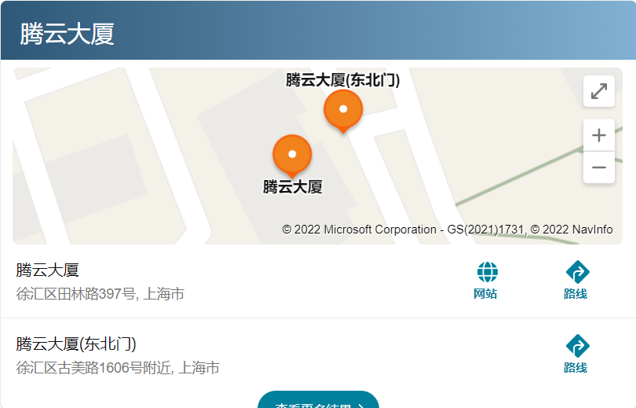

负责腾讯云官网技术的更新迭代，和项目的开发维护。
1、本科及以上学历，计算机相关专业， 三年以上前端工作经验；
2、精通HTML/CSS/JavaScript等前端开发语言，以及了解AJAX/HTML5/SPA等各种前端技术；
3、掌握Vue/React中至少一种前端框架，并了解底层原理，掌握React优先；
4、对nodejs有项目经验，并且至少熟悉一种后台语言，以及有一定的后台编程经验；
5、能够熟练使用linux环境下的常用操作；
6、良好的学习能力、沟通能力、团队协作能力、及分析问题解决问题能力，责任心强。
上海市-徐汇区-腾云大厦
